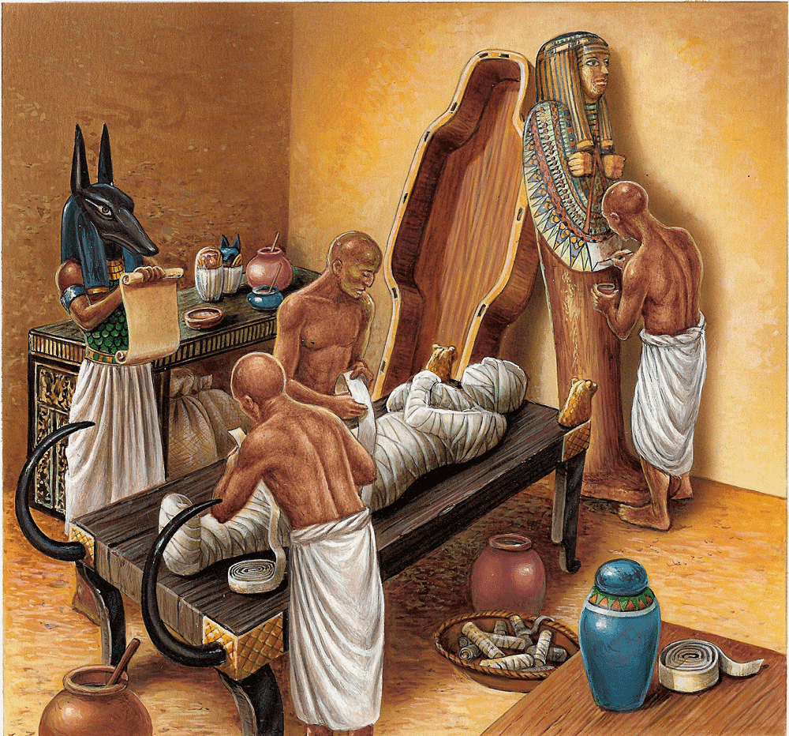

Es ist wichtig, den Osiris-Mythos vorab zu kennen, um die Bedeutung
des Totenkults zu verstehen. Der Tod im alten Ägypten ist ein Übergang und kein Ende, das heißt, der Tod stellt
einen Übergang zu etwas anderem dar. Als Etappe ist der Tod von zahlreichen Riten umgeben, die
unmittelbar Teil des Osiris-Mythos sind. Bei den alten Ägyptern waren die mit dem Tod
verbundenen Zeremonien und Glaubensvorstellungen ein wichtiger Teil ihres Lebens.
Die Ägypter waren der Ansicht, dass die Seele des Verstorbenen nach dem Tod wiedergeboren werden konnte und Zugang zum „Reich der Toten"
und zur ewigen Ruhe erhalten konnte. Nach dem Tod lassen sich verschiedene Schritte nachzeichnen, die den Verstorbenen auf das Jenseits vorbereiten, und
der Mythos vom Tod lässt sich in zwei Teile gliedern:
- der erste Schritt, die Reise des Verstorbenen ins Jenseits mit der Einbalsamierungszeremonie
- der zweite Schritt, der dem Gericht über den Verstorbenen durch den Gott Osiris entspricht, wenn er das Jenseits erreicht,
um möglicherweise zur ewigen Ruhe zu gelangen.
Die Einbalsamierung ist ein Ritual, das auf Erden stattfindet und von Priestern vollzogen wird.
Für die Ägypter besteht der Mensch aus fünf Elementen: dem Djet, das heißt der körperlichen Hülle,
dem Schatten, dem Ren, dem Namen, dem Ba, das man mit der Seele übersetzen könnte, und dem Ka, einer
Art Lebenssubstanz. Der Ka ist das, was den Menschen im eigentlichen Sinne ausmacht; er wird zugleich mit
dem Menschen geboren und überlebt ihn nach dessen Tod. Es ist der Ka, aber auch die Seele des Verstorbenen, der Ba, der die
Reise ins Jenseits fortsetzen wird. Damit Ka und Ba die körperliche Hülle des Verstorbenen verlassen und
sich dem Reich der Toten anschließen können, muss der Gegenstand beziehungsweise der Körper erhalten bleiben. Dazu vollziehen die Priester
eine Einbalsamierungszeremonie, um den Leichnam des Verstorbenen in eine Mumie zu verwandeln. Die Mumifizierung
reinigt den Körper und schützt ihn vor Verwesung. Das Ziel ist es, den Leichnam des Verstorbenen
dem des Osiris anzunähern, der ebenfalls mumifiziert wurde, um ewig zu bleiben. 
Die Mumifizierung dauert siebzig Tage. Sie wird von den Wetju durchgeführt, den für die
Mumifizierung zuständigen Priestern. Der Körper wird zunächst gewaschen, dann in der Sonne getrocknet und mit Ölen und Bienenwachs bestrichen,
das antibakterielle Eigenschaften besitzt, die die Erhaltung des Körpers begünstigen. Es sei angemerkt, dass die
Konservierung der Körper in Ägypten auf natürliche Weise durch sandige Böden und trockenes Klima erleichtert wird.
Manche Organe, wie Lunge, Magen, Gedärme und Leber, werden entnommen und in
Kanopen gelegt, die das Abbild der vier Horussöhne tragen. Das Herz, Sitz des Denkens und der Gefühle,
wird meist an seinem Platz belassen. Das Gehirn hingegen wird mit einem Haken durch die Nase abgesaugt.
Das Gehirn hat in der ägyptischen Vorstellung keinen Wert, da das Herz als Sitz des
Denkens gilt, weshalb es vermutlich entfernt und manchmal durch Bienenwachs ersetzt wird. Sind alle Eingeweide
entfernt, wird der Körper in Natron getaucht (eine chemische Substanz, die
in Ägypten natürlich in Salzseen vorkommt), die die Eigenschaft besitzt, den Körper stark
auszutrocknen, indem sie das vorhandene Fett entzieht, was zusammen mit dem trockenen Klima Ägyptens die
Konservierung begünstigt. Durch das Natron wird der Körper jedoch verformt: Er wird flach. Um ihm seine Form zurückzugeben,
wird Gewebe im Inneren des Körpers und in den Augen platziert. Sobald der Körper bereit ist, nehmen die Wetju die
Bandagierung vor. Amulette werden auf dem Leichnam des Verstorbenen platziert, der anschließend mit Streifen
aus Leinen umwickelt wird, die von der Familie gebracht werden. Eine Totenmaske vervollständigt bei den Reichsten das Ganze. Die Mumie wird
in einen Sarg gelegt und dann je nach sozialem Rang und Reichtum des Verstorbenen bestattet.
Wird der Körper nicht einbalsamiert, wird der Djet nach dem Tod zum Chat und kann nicht zur ewigen Ruhe gelangen.
Das Einbalsamierungsritual wurde von Isis geschaffen, unterstützt von Anubis, als sie den Körper ihres Gemahls
Osiris wiederherstellte, um ihn ins Leben zurückzurufen. Die Statuen und Opfergaben, die neben dem Verstorbenen in seinem Sarkophag stehen,
ermöglichen es, ihn auf seinem Weg zum Seelengericht zu begleiten.
Sobald der Djet vorbereitet und konserviert ist, kann der Verstorbene seine Reise ins Jenseits antreten. Der Ba, die Seele des Verstorbenen,
und sein Ka, seine Lebenssubstanz, verlassen den Körper, in den sie zurückkehren können, da der Djet erhalten bleibt,
um sich dem Reich der Toten anzuschließen. Das Reich der Toten steht jedoch nicht jedem offen. Der Verstorbene
muss zahlreiche Etappen durchlaufen. Bei jeder von ihnen muss er eine Formel rezitieren, die im
Totenbuch niedergeschrieben ist. Dieses Buch besteht aus mehreren Papyrusrollen und zeichnet die Reise des Verstorbenen ins
Jenseits nach. Die Legende schreibt seine Abfassung dem Gott Thot zu, der dazu berufen ist, denen die Köpfe abzuschlagen, die
sich dem Fortschreiten des Verstorbenen ins Reich der Toten entgegenstellen. Die berühmteste Episode des Totenbuchs,
wegen ihrer grundlegenden Bedeutung, ist die des Herzwiegens.

Das Wiegen der Seele oder die Psychostasie besteht darin, das von Anubis geleitete Herz des Verstorbenen während seines Übergangs
zwischen Leben und Tod auf eine Waagschale zu legen und auf der anderen Seite eine Feder (die die Göttin Maat verkörpert); ist das Herz
leichter (was bedeutet, dass das Herz nicht von Sünde befleckt ist), kann sich der Verstorbene dem Reich
der Toten anschließen, wo Osiris auf ihn wartet, und ein neues Leben im Reich der Toten führen. Andernfalls wird er verschlungen
von einem Ungeheuer (meist verkörpert durch die Göttin Ammit, die einen Krokodilkopf, einen Löwenkörper
Horus führt den Vorsitz beim Seelengericht, und
Thot verzeichnet das Ergebnis. Es ist das Herz, das gewogen wird, um über die Seele zu richten, denn das Herz gilt als
unfähig zu lügen: Alle vom Verstorbenen während seines Lebens begangenen Fehler sind daher in seinem Herzen gespeichert.
Osiris wurde erst dann Gott des Reiches der Toten, nachdem er die Prüfung des Herzwiegens erfolgreich bestanden hatte. Der Verstorbene
wollte sich mit Osiris identifizieren, um das Reich der Toten zu erreichen und in Frieden zu ruhen.